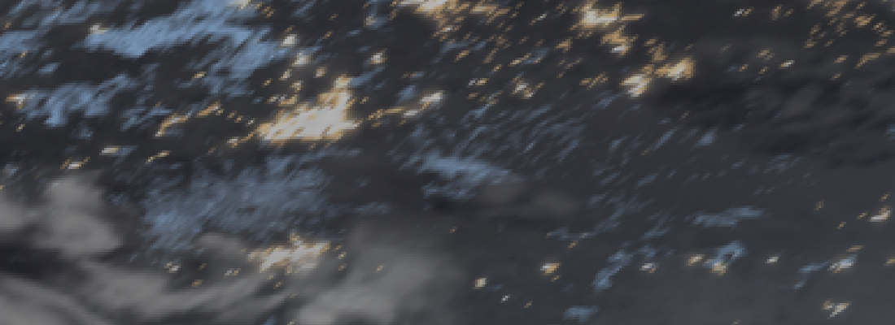
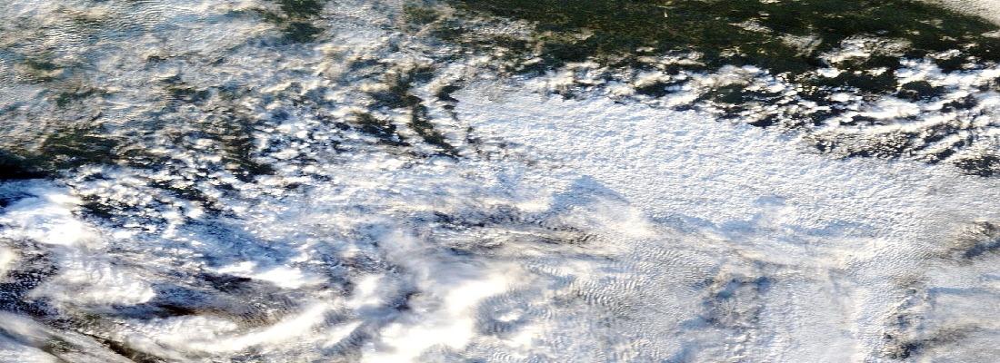
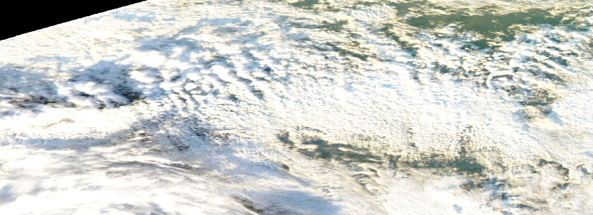

Iltalehti attributes this time to Estonia’s naval operations centre, and reports that the rescue coordination centre was informed at 09:30. We have not obtained the underlying logs.
Iltalehti / published 19:09 EETCOASTAL WATCH / SOURCE NOTEBOOK 02
The day
is still
arriving.
One position. Several clocks.
The rest stays open.
A story travels quickly across this water. The measurements arrive in smaller pieces.
In its 21 November statement, the Finnish Border Guard reported that a damaged Russian cargo vessel had drifted into Finnish waters. Iltalehti identifies the vessel as Sparta II and reports Estonia’s assistance. Here we open the public records around that day, with each source still attached.
Open the evening source recheckOpen the original saved day
21NOVEMBER 2026
GULF OF FINLAND
SAVED / NOT A LIVE FEED
GULF OF FINLAND
SAVED / NOT A LIVE FEED
Opening today’s saved source records…
Open original source downloads
Orrengrund weather / original bodyOrrengrund weather / receiptOrrengrund half-hour buoy / original bodyOrrengrund half-hour buoy / receiptOrrengrund native control / original bodyOrrengrund native control / receiptOrrengrund hourly control / original bodyOrrengrund hourly control / receiptGulf buoy / original bodyGulf buoy / receiptHamina sea level / original bodyHamina sea level / receiptSparta II dated position / original bodySparta II dated position / receiptSparta II latest control / original bodySparta II latest control / receiptSparta II later-time query / original bodySparta II later-time query / receiptSparta II identity metadata / original bodySparta II identity metadata / receiptAirport messages / original bodyAirport messages / receiptEstonian gauge response / original bodyEstonian gauge response / receiptDanish archive listing / original bodyDanish archive listing / receiptSentinel-1 catalogue / original bodySentinel-1 catalogue / receiptSentinel-2 catalogue / original bodySentinel-2 catalogue / receiptBorder Guard release / retrieval receiptIltalehti article / retrieval receipt
These links work independently of the interactive loader. The complete notebook JSON includes every source URL and receipt. Gzip responses retain the decoded response body and, where recorded, a separate wire hash.
THE SAVED DAY / TWO SHORES
One position.
Its own clock.
Capture completed
Environmental query through 19:00 EET.
The evening remains outside this snapshot.
Gold / one returned AIS position. Blue circles / buoys and gauge. Blue square / wind station. Crosshair / report marker, without a positional error estimate. Coastline / Natural Earth, public domain. Equirectangular context at approximately 60° N.
The context coastline could not be opened. Source points and all measurements remain available.
On a narrow screen, pan the map and plot sideways to inspect their full extent. Keyboard users can focus either region and use the arrow keys.
DIGITRAFFIC / LAST RETURNED POSITION
SPARTA II
IMO 9160994 / MMSI 273394890
26.229092° E / 59.984677° N
SOURCE timestampExternal / EET
09:01:42.644
2026-11-21T07:01:42.644Z
A source timestamp, not a verified vessel transmission clock. The same position came back from the latest-response control. A query from 10:00 EET returned no positions. These are endpoint results, not proof of silence at sea.
Inspect the AIS motion fields and later metadata clock
These motion fields belong to the saved position report. They do not describe the vessel’s later state. The metadata clock is later than the position clock; it does not supply a later fix. The AIS seconds field alone is not a complete, verified onboard UTC timestamp. Name, IMO and MMSI agree within the returned metadata; self-reported AIS does not authenticate a physical vessel’s identity.
Arrow keys: ten minutes. Shift + arrow: one second. Home and End: day boundaries.
This is a retrospective source-time browser. It does not reproduce what an operator knew then: first publication and original delivery times are mostly unknown. No interpolation or dead reckoning.
Numeric source valueReturned NaNAfter query cutoff
The whole saved window remains in view. Samples after browse time are dimmed. A returned NaN does not tell us whether a reading was unavailable, delayed or not yet published.
STAY WITH THE GAP
The other buoy
is elsewhere.
At 09:30, Orrengrund’s saved height is NaN. Further west, the Gulf buoy reports a number. Both belong here. One does not repair the other.
Across the 39 requested half-hour labels, Orrengrund has 19 numeric heights and 20 NaNs. An hourly query returns 11 numeric heights; eight more sit at half past. The omitted-timestep response agrees with all 19 available heights and the other four buoy channels.
Wind is measured on land. Waves are measured at buoys. Sea level is measured at Hamina. None is a measurement at the reported incident itself.
THE REPORT AND THE RECORD
Close in time.
Different kinds of time.
A reported detection, a source timestamp and a publication time do different work. Putting them beside one another does not establish what happened between them.
Digitraffic’s timestampExternal ends in .644 seconds. One position was returned during our evening retrieval. This does not independently date the reported incident or the vessel’s transmission.
The complete AIS responseThe Border Guard’s ePressi release says the damaged vessel had drifted into Finnish territorial waters and describes preparations for rescue and pollution response. It does not give an exact crossing time.
Finnish Border Guard / original releaseNews is attributed reporting. Sensor records describe their own measurements. This notebook does not independently verify the reported incident, its cause, the vessel’s later path or the reason a value is absent.
21 NOVEMBER 2026 / EVENING SOURCE RECHECK
The next
public record.
The cloud images arrived on a second request. On the Estonian coast, a separate observation table held readings while the archive query still came back empty. Each source keeps the time it gave us.
EUMETSAT7 frames09:00–10:00 EET
ESTONIAN COAST12 station rowsFour selected hours
AIS RECHECKSame morning fix21 November Danish file still unlisted
One hour above the Gulf
GeoColour / ten-minute product labels

PRODUCT TIME / 21 NOVEMBER09:00 EET
Provider-rendered imagery across 23–28.5° E and 59–61° N. The product label gives the time of the frame. Individual pixel acquisition times are unknown.
Images © EUMETSAT, CC BY 4.0. NASA’s static Black Marble background supplies the lights visible in the night portion. GeoColour product description.
The provider time list contained 127 labels through 21:00 EET at retrieval. This strip contains seven saved frames. The remaining labels in the list and hours beyond it are outside the saved strip.
Open the frame receipts and provider time list
The original DNS failures are recorded below in the first capture. These receipts cover the same seven requested times and record the retrieval on the evening of 21 November.


View the NASA Terra and Aqua day layers
NASA GIBS served two MODIS true-colour layers labelled 21 November. They use the same Gulf bounds as the frames above. The date labels represent daily products. Exact acquisition times within the day are unknown. The black edge visible in the Aqua image is part of the returned image.






Imagery from NASA Earthdata / GIBS.
The coast has its own clock
Keskkonnaagentuur / operational observations
Four selected table labels, with the source precision retained. The agency flags these operational readings as unchecked. The exact sensor time and averaging window are unspecified. Sea level is already in EH2000.
09:00 EET
| Station | cm EH2000 | °C |
|---|---|---|
| Pirita | 55 | 6,9 |
| Kunda | 62 | 6,4 |
| Narva-Jõesuu | 61 | 4 |
12:00 EET
| Station | cm EH2000 | °C |
|---|---|---|
| Pirita | 44 | 6,4 |
| Kunda | 52 | 6,6 |
| Narva-Jõesuu | 51 | 4 |
17:00 EET
| Station | cm EH2000 | °C |
|---|---|---|
| Pirita | 42 | 7,4 |
| Kunda | 43 | 6,9 |
| Narva-Jõesuu | 40 | 4,2 |
21:00 EET
| Station | cm EH2000 | °C |
|---|---|---|
| Pirita | 49 | 7,2 |
| Kunda | 51 | 7 |
| Narva-Jõesuu | 48 | 4 |
The separate hourly archive returned [] for the original window and for the whole 21 November civil day. The 11 November control returned 144 rows. The agency documents a daily archive update. Archive documentation.
Open the gauge extracts and archive responses
- Operational readings / CSV · JSON with source labels and URLs
- Original query window / 0 rows · receipt
- Day through 21:00 EET / 0 rows · receipt
- Whole local day / 0 rows · receipt
- 11 November control / 144 rows · receipt
Coastal observation data © Estonian Environment Agency, CC BY 4.0 dataset listing.
The same AIS point
The fixed 00:00–09:59:59.999 EET query returned the original response byte for byte. The 10:00–13:00 EET query returned zero locations. These endpoint results cover the specified requests. Reception and transmission outside the returned record remain unknown.
The Danish 21 November listing was still empty at 21:22 EET. The November listing ended with the 18 November archive. Geographic coverage of the 21 November file remains untested.
Open the AIS responses and receipts
Same records in the index
The two queries still list seven Sentinel-1 and 17 Sentinel-2 records. The parsed catalogue responses match the original snapshot. These counts describe entries in the search area. Sentinel imagery remains outside the saved set.
Open both catalogues and receipts
Capture methods and source limits · Follow-up file hashes · Return to the original capture
THE UNFINISHED EDGES
A blank has
more than one meaning.
Some returned values are NaN, without telling us whether the cause is delay or unavailability. Some queries return no rows. Some requests fail before reaching a server. The evening has not been requested. Each blank keeps its own meaning.
DANISH AIS / NOT LISTED AT CAPTURE
The file is not here yet.
The saved, untruncated S3 listing has no key for 21 November. We did not download or scan that day’s archive. The 11 November coverage result belongs to its own file and date.
Inspect the listingESTONIAN GAUGES / EMPTY RESPONSE
No rows in this query.
The three-station, two-channel request returned an empty JSON array. This establishes a response to these filters at capture time. It does not establish that the stations made no measurements.
Inspect the exact filters and capture timeCOPERNICUS / CATALOGUES SAVED
A listing is a beginning.
Seven Sentinel-1 and seventeen Sentinel-2 catalogue records intersect the Gulf query rectangle. No satellite image pixels have been decoded or associated with the vessel. Whole-tile cloud percentages do not establish visibility at the AIS point.
EUMETSAT / REQUESTS FAILED LOCALLY
No borrowed sky.
The seven requested cloud frames, 09:00–10:00 EET, failed DNS resolution in this capture environment. No HTTP response or image was obtained. This says nothing about EUMETSAT’s archive coverage. No frame from 11 November has been substituted.
Inspect the seven failed request receipts


OPEN THE RECORD
The source
comes with it.
Saved response bodies. The URL that produced them. A capture receipt and SHA-256. Gzip decoding is recorded separately. Later checks can sit beside this snapshot; they should never erase it.
Open the source ledger / 15 saved responses
Use the original source downloads above if the interactive ledger cannot open. Every response and receipt is linked there.
COASTAL WATCH / SAME WATER, SEPARATE RECORDS
Keep the dates
on the evidence.
The 11 November notebook remains intact. HAXR’s radar recordings are from Hamburg, on another date. A replay through Raivari today would create a new transport receipt, not recover the report’s original journey.
FMI and Fintraffic Digitraffic data: CC BY 4.0. Copernicus catalogue metadata, IEM airport messages and agency archive listings remain attributed to their providers. No news photographs or article bodies are republished.